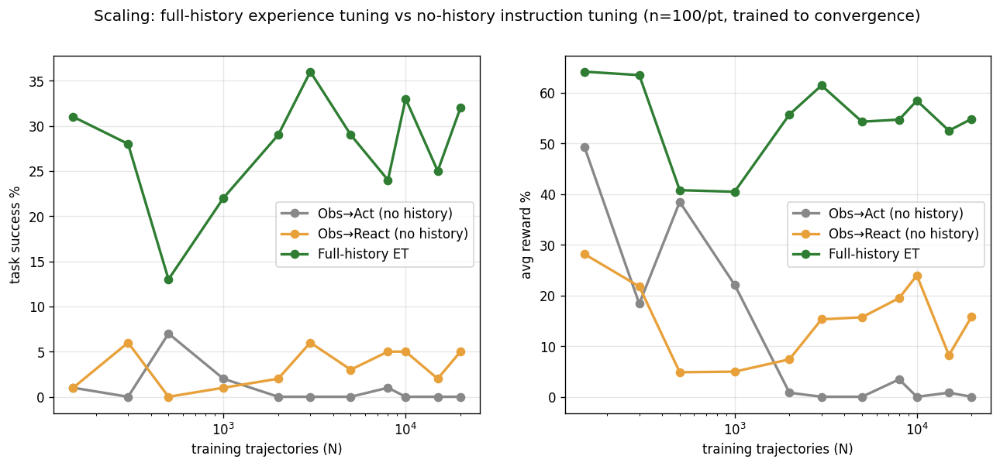

Three cells per dataset size (nested subsets of 20k trajs), iid SFT, trained to convergence (shared held-out val early-stop), eval n=100. 33/33 points in. Obs→Act (no history) · Obs→React (no history, +reason) · Full-history ET. Only complete (n=100) cells shown.
| N | Obs→Act | Obs→React | Full-history ET |
|---|---|---|---|
| 150 | 1.0% r49 | 1.0% r28 | 31.0% r64 |
| 300 | 0.0% r18 | 6.0% r22 | 28.0% r63 |
| 500 | 7.0% r38 | 0.0% r5 | 13.0% r41 |
| 1,000 | 2.0% r22 | 1.0% r5 | 22.0% r40 |
| 2,000 | 0.0% r1 | 2.0% r7 | 29.0% r56 |
| 3,000 | 0.0% r0 | 6.0% r15 | 36.0% r61 |
| 5,000 | 0.0% r0 | 3.0% r16 | 29.0% r54 |
| 8,000 | 1.0% r3 | 5.0% r19 | 24.0% r55 |
| 10,000 | 0.0% r0 | 5.0% r24 | 33.0% r58 |
| 15,000 | 0.0% r1 | 2.0% r8 | 25.0% r53 |
| 20,000 | 0.0% r0 | 5.0% r16 | 32.0% r55 |

Reference (N=150 frozen, n=200, separate adapters): Obs→Act 18.0% · Obs→React 2.5% · full-history 40.0%.